토스 미니앱이란?
토스 미니앱은 토스 앱 안에서 바로 실행되는 서비스이에요. 별도 앱 설치 없이 사용자를 만날 수 있고, 토스의 결제와 광고 기능도 함께 활용할 수 있어요. 작은 아이디어를 빠르게 검증하고 수익 가능성까지 확인하기 좋은 출발점이에요.
출시 3주 만에 광고 매출 578,614원을 만들었어요.
막연한 가능성 이야기가 아닙니다. 5월 10일 첫 미니앱을 출시한 뒤 3주 만에 광고 매출 578,614원을 기록했어요. 지금은 미니앱 10개를 직접 운영하며 어떤 구조가 실제 수익으로 이어지는지 계속 검증하고 있어요. 이 가이드는 그 과정에서 바로 효과가 있었던 방법만 남겼어요.
 실제 운영 중인 미니앱의
5월 한 달간 AdMob 광고 수익 인증
실제 운영 중인 미니앱의
5월 한 달간 AdMob 광고 수익 인증
준비
준비 단계에서 일정이 가장 많이 밀립니다. 그래서 필요한 것만 먼저 세팅해요. 콘솔 가입, 검토 요청, AI 도구 설치, 개발 환경 설정까지 이 순서대로 끝내면 중간에 막힐 일을 크게 줄일 수 있어요.
앱인토스(Apps in Toss) 콘솔 가입
앱을 등록하고 관리하고 정산받으려면 앱인토스 콘솔 가입이 먼저이에요. 아래 버튼으로 계정을 만들고 개발자 센터에 들어가세요.

미니앱 검토 먼저 요청하기
검토는 보통 2~3일 걸립니다. 개발 전에 먼저 요청해 두면 출시 일정이 덜 밀립니다. 앱 이름, 아이콘, 간단한 콘셉트만 있어도 시작할 수 있어요.


Codex 설치 및 구독 준비

개발 환경 설정
이제 작업 폴더를 만들고, AI가 토스 미니앱 규칙을 이해하도록 가이드 문서를 넣어요.

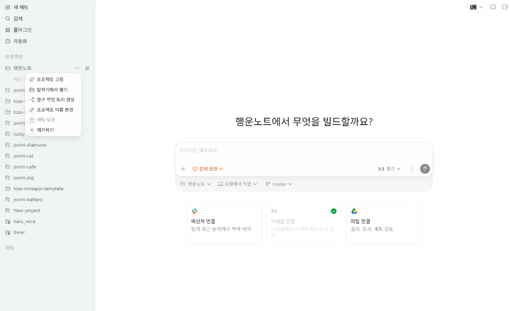
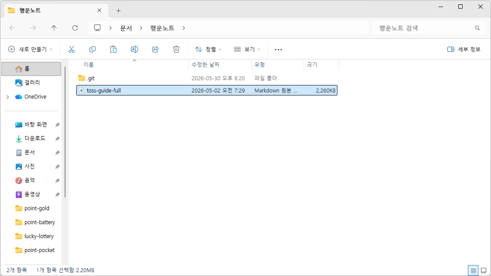
Cursor를 쓰면 Docs 기능에 가이드를 넣고, Claude Code를 쓰면 MCP나 텍스트 컨텍스트로 같은 문서를 제공하면 돼요. 핵심은 어떤 도구를 쓰든 토스 미니앱 규칙을 먼저 학습시키는 것이에요.
기획과 수익화 구조 잡기
무슨 기능부터 넣어야 할지 막막하신가요? 먼저 어떤 흐름이 수익으로 이어질지 정해야 해요. Plan Mode를 쓰면 사용자 문제, 광고 위치, 데이터 저장 방식을 한 번에 정리할 수 있어요. 이 단계가 선명할수록 개발 속도도 빨라져요.
 프롬프트 입력창 상단 메뉴에서
'플랜 모드'를 활성화하는 과정
프롬프트 입력창 상단 메뉴에서
'플랜 모드'를 활성화하는 과정
프롬프트 2. 수익형 MVP 올인원 기획 및 구조 설계
나의 기획에 적합한 배너/전면/보상형 광고 노출을 설계하여 수익창출이 가능한 Apps in toss Web 형태의 토스 미니앱 구현해줘. [요구사항] 1. Firebase를 연동하여 최소한의 데이터를 보관할 것 2. 공식 스타터 방식으로 구현할 것 3. 별도 서버가 필요 없는 방식(Serverless)으로 구현할 것 4. 계획을 수립하기 전에 나에게 몇 가지 질문을 던져서 기획안을 확정할 것 5. TDS 컴포넌트만 활용해서 토스 스타일 화면 구현할 것 [참고 문서] [toss-guide-full.md](toss-guide-full.md)
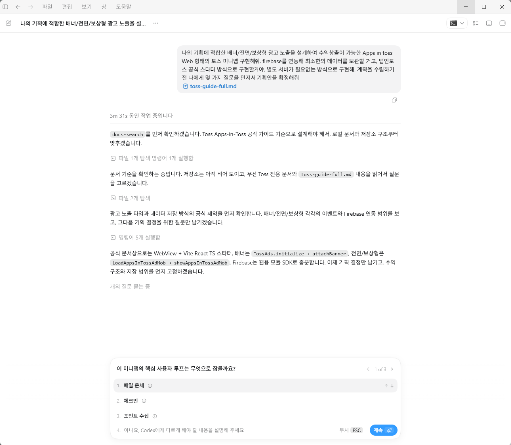
Plan모드이기 때문에 Codex가 필요한 내용을 질문하며 구체화한다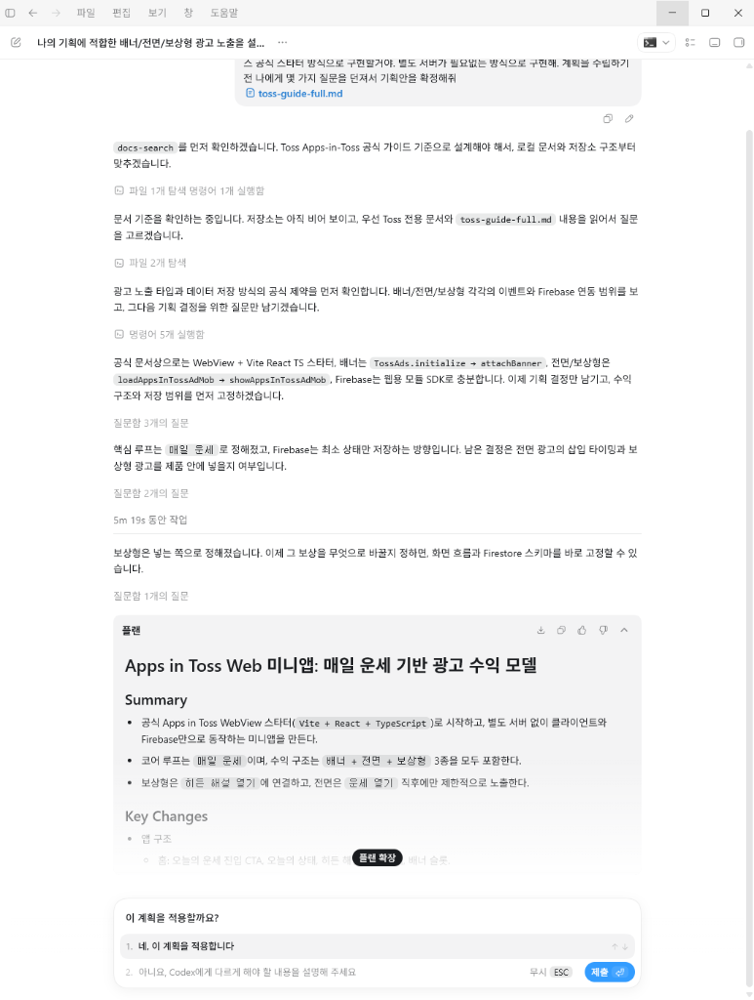
모든 계획이 완성된 모습, 제출 버튼을 클릭하면 개발이 시작된다.PC에서 먼저 확인하기
화면을 빨리 보는 사람이 수정도 빨리 끝냅니다. 명령어 두 개만 실행하면 PC에서 바로 결과를 확인할 수 있어요.
로컬 실행 단계
Codex 우측 상단의 터미널 버튼을 클릭하여 터미널 창을 열어줘요.
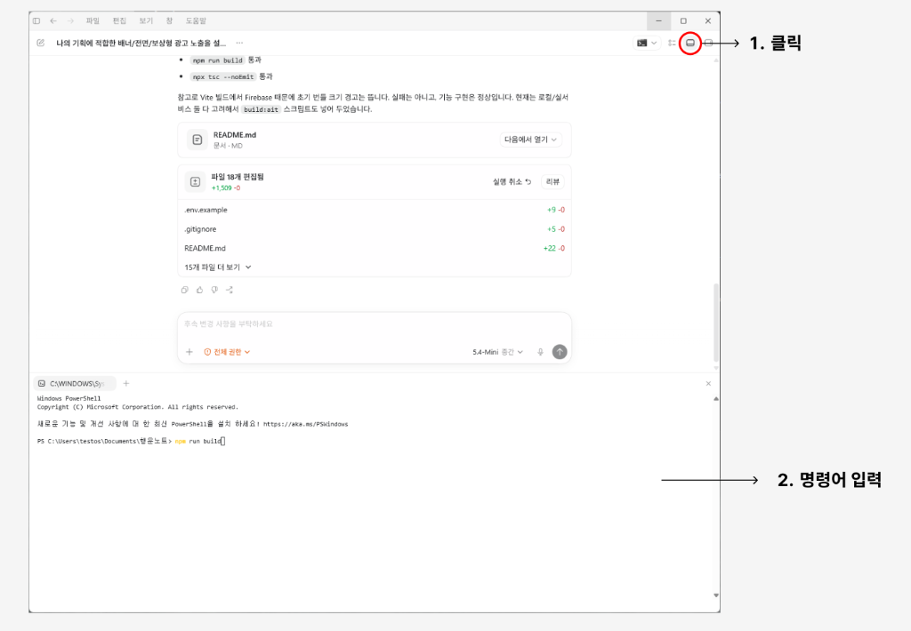
그냥 아래 명령어를 차례대로 복사해서 터미널에 붙여넣은 후 엔터(Enter)를 치면 됩니다!
명령어를 실행하면 터미널에 아래와 같이 로컬 및 네트워크 접속용 링크가 제공돼요.
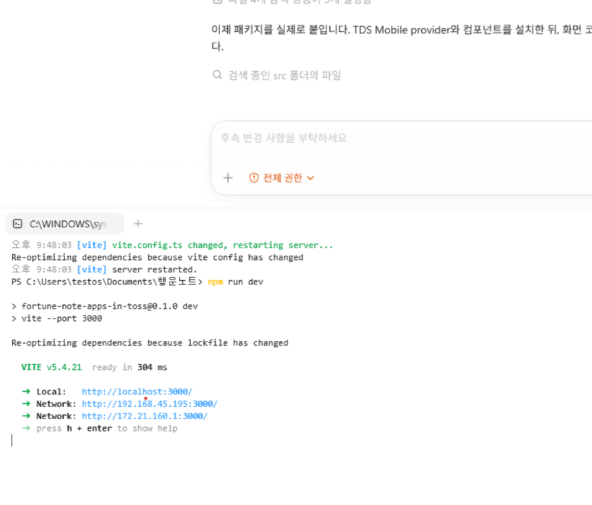
링크를 클릭하면 Codex 안에서 창이 실행되며 화면을 확인할 수 있어요.
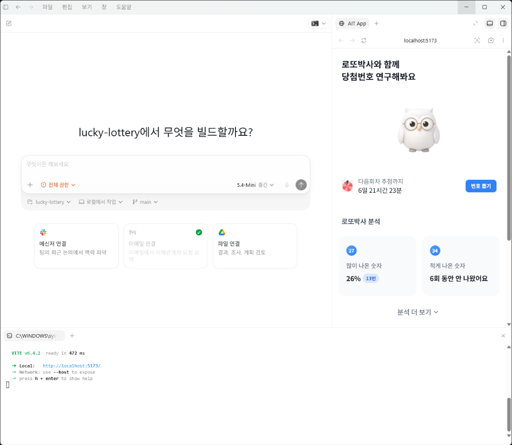
실행된 창 오른쪽 위의 주석 버튼을 누르고 수정을 원하는 부분을 지정하여 수정사항을 요청할 수 있어요.
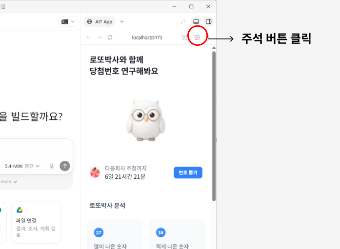
토스 앱에서 최종 확인하기
브라우저에서 잘 보여도 토스 앱에서는 다르게 보일 수 있어요. QR 코드로 실기기에서 확인해야 웹뷰 동작, 레이아웃, 광고 연결 문제를 미리 잡을 수 있어요.
토스 앱 내 테스트 실행 단계
Codex 터미널을 열고 아래 명령어들을 차례대로 실행하여 프로덕션 빌드를 수행하고 패키징을 완료해요.
빌드가 완료되면 토스 개발자 콘솔의 해당 앱 관리 페이지에서 새 빌드 버전을 업로드하거나 추가해요.
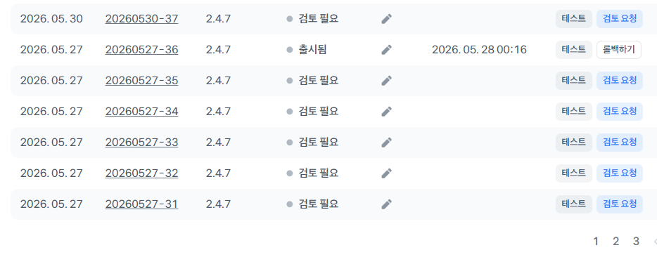
업로드된 빌드 목록과 테스트 버튼 화면콘솔 목록에 표시된 빌드의 우측 [테스트] 버튼을 누르면 화면에 QR 코드가 나타나요. 스마트폰으로 이 QR 코드를 스캔하면 실제 토스 앱이 실행되면서 내가 개발한 미니앱을 실기기에서 직접 테스트해 볼 수 있어요.
광고로 수익화하기
같은 방문자 수라도 광고 배치에 따라 수익 차이가 크게 나요. 그래서 광고는 출시 후에 붙이는 옵션이 아니라 기획 단계부터 함께 봐야 해요. 이 장에서는 배너, 전면형, 리워드 광고를 언제 써야 하는지 바로 이해할 수 있게 정리했어요.
인앱 광고 핵심 개념
인앱 광고는 앱 내부 화면에 자연스럽게 배치하여 노출 수와 광고 단가에 의해 수익을 창출하는 모델이에요. 예상 수익은 아래 핵심 공식을 따릅니다.
- 노출 수: 광고가 사용자 화면에 실제로 나타난 횟수이에요. 체류 시간이 길고 방문이 잦은 메인/리스트 화면이 유리하지만, 과도하게 노출되면 사용자 경험을 해치니 주의해야 해요.
- eCPM (1,000회 노출당 수익): 광고 1,000회당 단가를 의미하며, 사용자가 광고에 얼마나 몰입하느냐에 따라 단가 집중도가 달라져요. (자발적 리워드 광고 > 전면형 > 배너 순)
인앱 광고 유형 3가지
화면 전환 시점에 화면 전체를 덮으며 재생되는 광고이에요. 사용자가 무시할 수 없으므로 중간 정도의 노출 수와 단가(eCPM)를 가져요. 레벨 완료나 콘텐츠 전환처럼 흐름이 멈추는 자연스러운 틈새에 배치해요.

유저가 직접 보상을 받기 위해 자발적으로 선택해 시청하는 광고이에요. 높은 집중도로 가장 높은 eCPM 단가를 가져요. 포인트 지급, 기능 제한 해제, 이어하기 기회 충전 등 사용자가 확실한 메리트를 얻는 순간에 연동해요.

화면의 상단이나 하단에 고정 노출되는 광고이에요. 가장 많은 노출 수를 안정적으로 확보할 수 있지만, eCPM 단가는 가장 낮아요. 메인 화면이나 리스트 등 체류 시간이 긴 페이지에 부착해요.

단일 광고 타입만 쓰는 것보다, [배너(지속 노출) + 전면형(화면 전환 보완) + 리워드(고단가 수익 상승)]를 함께 배치하여 서비스 흐름을 망치지 않는 선에서 전체 수익 극대화를 유도해야 해요.
토스 파트너 센터 인앱 광고 세팅
토스 광고 SDK를 코드에 적용하기에 앞서, 토스 파트너 센터에서 사업자 정보 및 정산 처리를 완료하고 광고 지면(광고 그룹)을 생성해야 해요.
광고 연동을 진행하려면 먼저 콘솔에 사업자 정보가 등록되어 있어야 해요. 이후 [정보] 탭에서 수익금을 정산받을 은행 계좌 등의 정산 정보를 입력해 검토 요청(평균 2~3 영업일 소요)을 완료해요.
콘솔 좌측 메뉴에서 [앱인토스 > 애즈] 또는 [인앱 광고] 탭으로 이동해요. 광고 그룹 메뉴에서 현재 생성된 광고 지면의 성과(총 노출수, eCPM, 예상 수익 등)를 한눈에 모니터링할 수 있어요.
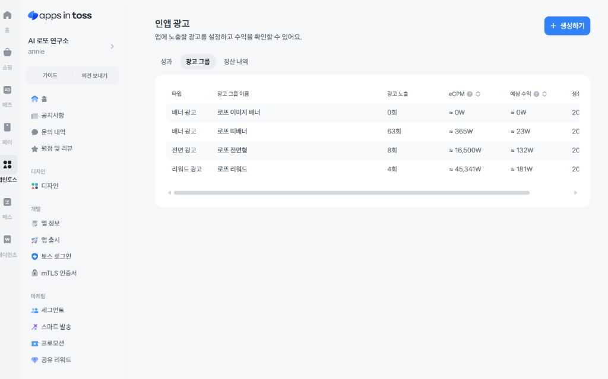
우측 상단의 [+ 생성하기] 버튼을 누르면 광고 지면 등록 창이 뜹니다. 광고 그룹 이름(예: 메인_하단배너, 결과화면_리워드광고)을 적고 유형을 선택한 뒤, 리워드 광고일 경우 지급할 보상 재화 이름과 수량을 설정해요.
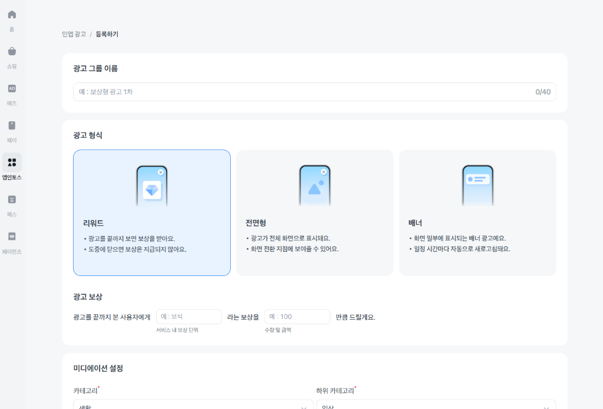
생성된 광고 그룹을 클릭하면 우측 정보 패널에서 광고 그룹 ID(예: ait.v2.live.xxx)를 확인할 수 있어요. 테스트용 광고가 아닌 실제 광고를 노출하여 수익을 발생시키려면 반드시 이 라이브 운영 ID를 프로젝트 환경변수에 설정해야 해요.
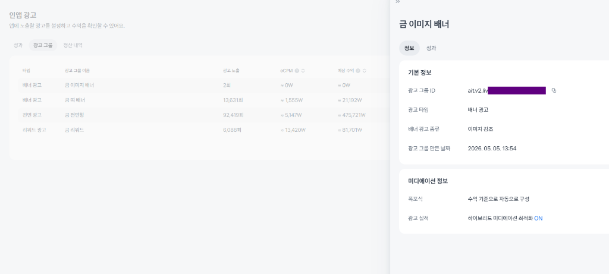
- 성과 분석: 일일 총 노출수, eCPM, 예상 수익 데이터는 매일 오전 4시에 콘솔에 집계되어 업데이트돼요.
- 정산 일정: 매월 1일부터 말일까지의 확정 수익은 다음 달 1일에 확정되며, 확정된 정산금은 해당 월 말일에 입금 처리돼요.
실제 기기(토스 앱/샌드박스)에서 테스트할 때 전면형/보상형 광고가 로드되지 않거나 화면에 뜨지 않는 문제가 발생한 경우에만 아래 프롬프트를 복사하여 사용해 주세요. 에러 원인 분석과 문제 해결 방안을 함께 제공해요.
프롬프트 5. 토스 SDK 브릿지 래퍼 및 보상형 광고 트러블슈팅
실제 토스 앱 내에서 광고가 비정상적으로 노출되지 않거나 에러가 발생할 때, 코드 상의 오류 원인을 추적하고 해결하기 위한 디버깅용 프롬프트이에요.
너는 토스 미니앱 연동 및 인앱 광고 문제 해결을 담당하는 시니어 디버깅 엔지니어이자 트러블슈팅 전문가야. 현재 개발 중인 토스 미니앱에서 전면형/보상형 광고가 정상적으로 표시되지 않는 문제가 발생했어. 다음 코드를 검토하고 발생 가능한 원인 분석 및 해결 방안을 제시해줘. [증상 및 에러 상황] - 테스트 기기에서 광고 버튼을 눌러도 반응이 없거나, 로드 실패 에러가 발생함 - console.log 상에 SDK 관련 에러나 이벤트 콜백 오류가 표시됨 - 일반 브라우저와 토스 앱(샌드박스 포함) 환경의 브릿지 호출 분기 처리 중 오류 의심 [점검 및 분석 요구사항] 1. SDK 광고 로드 및 노출 흐름 검토: - loadFullScreenAd와 showFullScreenAd가 제대로 호출되는지 확인 (사전 로드(Prewarm) 여부) - userEarnedReward, dismissed, failedToShow 등 광고 라이프사이클 이벤트 리스너가 누수 없이 올바르게 등록되고 있는지 2. 광고 식별자 및 설정 점검: - 사용 중인 광고 그룹 ID(Ad Group ID)가 테스트용 ID인지 운영용 라이브 ID인지 체크 - 신규 생성한 광고 그룹 ID의 경우, 애드 네트워크 반영 대기 시간(최대 2시간)에 따른 일시적 에러 가능성 분석 3. 브릿지 환경 감지 및 예외 처리: - UserAgent 분석을 통한 isTossApp() 판정이 정확한지 - 토스앱 외부 브라우저 환경에서 Mock 처리 및 Fallback UI 구현이 제대로 돌아가는지 4. 리워드 지급 조건 검증: - requested 이벤트와 실제 보상 획득 이벤트(userEarnedReward)를 혼동하여 보상을 잘못 지급하고 있지 않은지 내가 제공하는 src/lib/tossSdk.ts 및 컴포넌트 코드를 기반으로, 위의 점검 포인트를 확인하여 에러의 원인 진단과 디버깅 솔루션을 구체적인 코드 예시와 함께 작성해줘.
광고 연동 시 필수 확인 사항
- 사전 로드(Prewarm) 적용: 사용자가 광고 버튼을 누르기 전에 `loadFullScreenAd`를 미리 호출해야 광고가 지연 없이 즉시 재생되어 이탈률을 낮출 수 있어요.
- 지급 시점 검증: 광고 시청 완료 이벤트(`userEarnedReward`)를 정확히 확인한 후에만 포인트 지급이나 기능 잠금 해제 상태로 변경해야 해요.
- 대체 UX(Fallback) 준비: 광고 로드 실패(`failedToShow`) 또는 일시적인 네트워크 오류 시 유저에게 적절한 안내(예: "광고를 불러오지 못했어요. 잠시 후 다시 시도해 주세요")를 제공해야 앱이 멈추지 않아요.
- 테스트용 광고 ID 사용: 개발 중 인앱 광고 테스트 시에는 반드시 테스트용 광고 ID를 사용해야 해요. 운영 라이브 ID를 사용해 테스트를 진행하면 구글 애드 네트워크로부터 심각한 제재 및 계정 중단이 발생할 수 있어요.
출시하기
테스트가 끝났다면 출시까지는 길지 않아요. 검토 요청과 출시 버튼의 흐름만 이해하면 첫 공개까지 빠르게 갈 수 있어요.
토스 앱 출시 진행
앱 출시 메뉴에서 빌드 테스트가 완료되었다면 우측의 [검토 요청] 버튼을 눌러줘요.
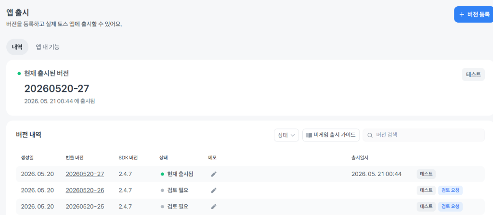
검토가 완료되면 검토 요청 버튼이 [출시하기]로 변경돼요. 이 버튼을 누르면 우리 앱이 토스 앱에 정식 출시돼요.
출시된 앱은 토스 앱 하단의 [전체 탭] > [바로가기] > [미니앱] 메뉴에서 찾아볼 수 있어요.
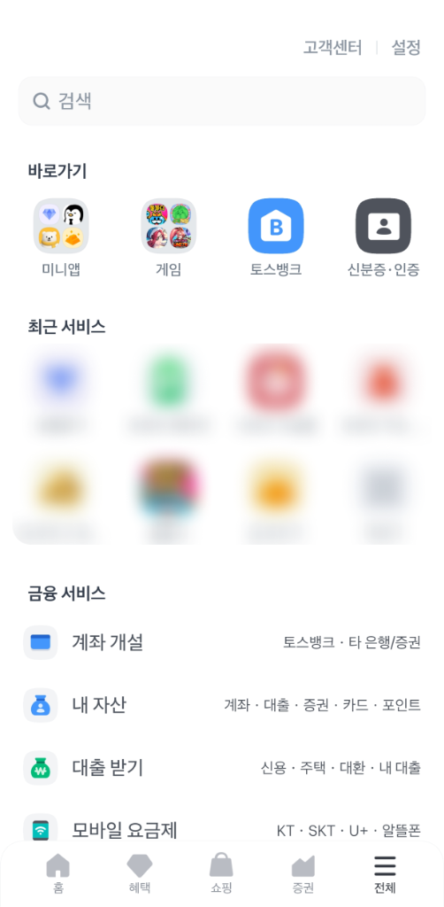
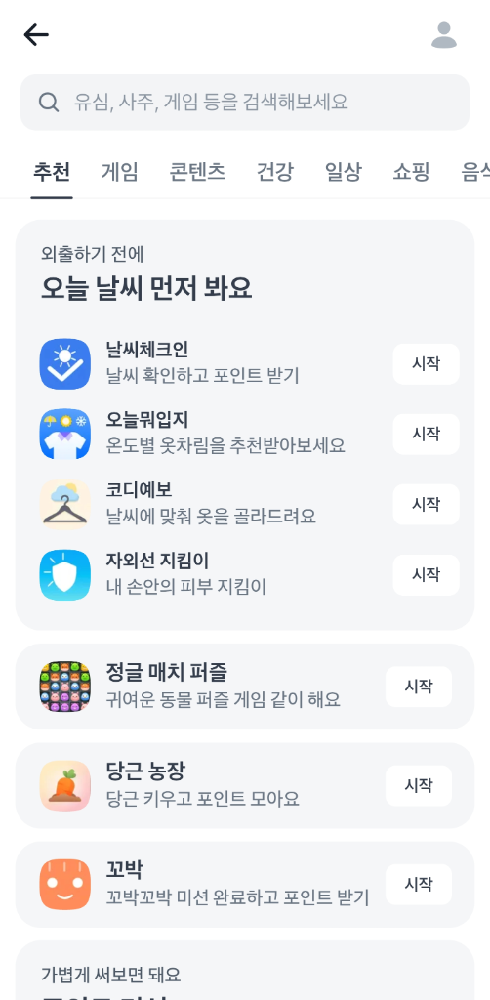